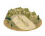
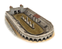
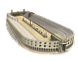
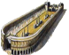
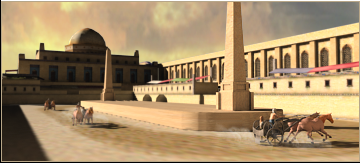
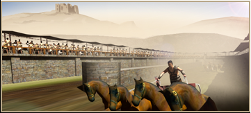
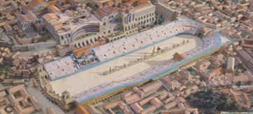
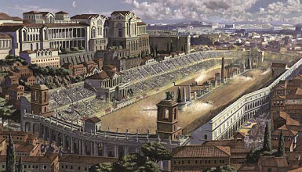

RTR: Imperium Surrectum
RTR: Imperium SurrectumRacing Course (Leisure) chain
4 levels, each replacing the one before it — you upgrade in place rather than building alongside.
Racing Course (Leisure) → Stadion (Leisure) → Hippodrome (Leisure) → Huge Hippodrome (Leisure)
Pictures are the game's own building art. Where a culture ships none of its own, the game falls back to another culture's, and that is what is shown here.
Levels at a glance
| Level | Cost | Build time | Minimum settlement | Upgrades to | Level | Cost | Build time | Minimum settlement | Upgrades to | ||
|---|---|---|---|---|---|---|---|---|---|---|---|
 | Racing Course (Leisure) | 3,500 | 4 | large town | Stadion (Leisure) |  | Stadion (Leisure) | 7,000 | 6 | city | Hippodrome (Leisure) |
 | Hippodrome (Leisure) | 10,500 | 8 | large city | Huge Hippodrome (Leisure) |  | Huge Hippodrome (Leisure) | 17,500 | 9 | huge city | — |
Costs in denarii, build time in turns.
Racing Course (Leisure)

Where the most fit show their skills.
This racing course is not much more than a leveled field with a length of several hundred meters, prepared for occasional chariot races. Often such courses are laid out at the ground of narrow valleys, so that the surrounding hillsides can be used as provisional stands. Real races on these courses are rare but very entertaining events, that bring some diversion to the daily life. When not used for races ordinary people can use it for informal sporting competitions.
Wording varies by culture: 10 versions of this description exist in the game files.
| Cost | 3,500 denarii | Build time | 4 turns | Minimum settlement | large town | Upgrades to | Stadion (Leisure) |
What it does
- +1 public order (happiness)
- recruits gain 1 experience
- taxable income -8 to -2, scaling with settlement size (player only)
Show 13 effects that apply only in the circumstances shown
- can stage races — only when
equestrian_factions and not horse_supply and camel_supply - can stage races — only when
equestrian_factions and horse_supply and not camel_supply - can stage races — only when
equestrian_factions and horse_supply and camel_supply - -2 taxable income — only when
size1 and building_present_min_level racing_stadium small_stadium and not is_player - -3 taxable income — only when
size2 and building_present_min_level racing_stadium small_stadium and not is_player - -3 taxable income — only when
size3 and building_present_min_level racing_stadium small_stadium and not is_player - -4 taxable income — only when
size4 and building_present_min_level racing_stadium small_stadium and not is_player - -4 taxable income — only when
size5 and building_present_min_level racing_stadium small_stadium and not is_player - -5 taxable income — only when
size6 and building_present_min_level racing_stadium small_stadium and not is_player - -5 taxable income — only when
size7 and building_present_min_level racing_stadium small_stadium and not is_player - -6 taxable income — only when
size8 and building_present_min_level racing_stadium small_stadium and not is_player - -6 taxable income — only when
size9 and building_present_min_level racing_stadium small_stadium and not is_player - -8 taxable income — only when
size10 and building_present_min_level racing_stadium small_stadium and not is_player
Religious belief — spreads 42 beliefs, by how much depending on what the region already believes.
Show the 42 beliefs
- Aeolian +2
- Arab +1
- Arcadian +2
- Armenian +1
- Assyrian +1
- Baltic +1
- Bithynian +1
- Bosporan +2
- Cappadocian +1
- Carian +1
- Caucasian +1
- Celtic +1
- Cilician +1
- Dardanian +1
- delmato_pannonian (no name in the text files) +1
- Dorian +2
- Egyptian +1
- Epirote +2
- Ethiopian +1
- Germanic +1
- Greco-Bactrian +2
- Iberian +1
- Illyrian +1
- Indian +1
- Ionian +2
- Iranian +1
- Italic +1
- Judaean +1
- Liburnian +1
- Libyan +1
- Lycian +1
- Macedonian +2
- Mesopotamian +1
- Northwest Greek +2
- Paeonian +1
- Paphlagonian +1
- Phoenician +1
- Pisidian +1
- Scythian +1
- Thracian +1
- Triballian +1
- Venetic +1
Stadion (Leisure)

Greek Athletics the Roman way.
With the growing popularity of races, it has become necessary to build a permanent Stadium to satisfy the masses. They have the standard length of 600 feet, a length called the Stadion by the Greeks. The largest part is the stands, which can hold several thousands spectators. These grounds serve a dual purpose, preparing soldiers for the rigours of campaign while offering the populace some great entertainment. The most common events are foot races and other displays of athletics, but small horse and chariot races may also be held here.
Wording varies by culture: 11 versions of this description exist in the game files.
| Cost | 7,000 denarii | Build time | 6 turns | Minimum settlement | city | Upgrades to | Hippodrome (Leisure) |
What it does
- +3 public order (happiness)
- recruits gain 1 experience
- taxable income -9 to -5, scaling with settlement size (player only)
Show 13 effects that apply only in the circumstances shown
- can stage races — only when
not horse_supply and camel_supply - can stage races — only when
horse_supply and not camel_supply - can stage races — only when
horse_supply and camel_supply - -5 taxable income — only when
size1 and building_present_min_level racing_stadium stadium and not is_player - -5 taxable income — only when
size2 and building_present_min_level racing_stadium stadium and not is_player - -6 taxable income — only when
size3 and building_present_min_level racing_stadium stadium and not is_player - -6 taxable income — only when
size4 and building_present_min_level racing_stadium stadium and not is_player - -7 taxable income — only when
size5 and building_present_min_level racing_stadium stadium and not is_player - -7 taxable income — only when
size6 and building_present_min_level racing_stadium stadium and not is_player - -8 taxable income — only when
size7 and building_present_min_level racing_stadium stadium and not is_player - -8 taxable income — only when
size8 and building_present_min_level racing_stadium stadium and not is_player - -9 taxable income — only when
size9 and building_present_min_level racing_stadium stadium and not is_player - -9 taxable income — only when
size10 and building_present_min_level racing_stadium stadium and not is_player
Religious belief — spreads 41 beliefs, by how much depending on what the region already believes.
Show the 41 beliefs
- Aeolian +3
- Arab +2
- Arcadian +3
- Armenian +2
- Assyrian +2
- Baltic +2
- Bithynian +2
- Bosporan +3
- Cappadocian +2
- Carian +2
- Caucasian +2
- Celtic +2
- Cilician +2
- Dardanian +2
- delmato_pannonian (no name in the text files) +2
- Dorian +3
- Egyptian +2
- Epirote +3
- Ethiopian +2
- Greco-Bactrian +3
- Iberian +2
- Illyrian +2
- Indian +2
- Ionian +3
- Iranian +2
- Italic +2
- Judaean +2
- Liburnian +2
- Libyan +2
- Lycian +2
- Macedonian +3
- Mesopotamian +2
- Northwest Greek +3
- Paeonian +2
- Paphlagonian +2
- Phoenician +2
- Pisidian +2
- Scythian +2
- Thracian +2
- Triballian +2
- Venetic +2
Hippodrome (Leisure)

A sacred ground where men race for divine favour.
The Circus is similar in construction and function to the ordinary hippodrome, except that everything is bigger, better and more magnificent, worthy of the greatest metropolises of Rome. These buildings have lengths of over 500 meters and the capacity of their stands is high enough for nearly 100,000 spectators. In the vaults beyond the stands, near the entrances are located small shops and taverns that profit from countless visitors and make the Circus an even more attracting place. However, maintaining these buildings and holding great races is expensive and thus reserved for the rich and powerful. No Emperor or Governor can, however, afford to disregard the possibly more volatile effects of so many fanatic people concentrated in one place. A race can quickly turn into brawl which in turn can spark a revolt...
Wording varies by culture: 3 versions of this description exist in the game files.
| Cost | 10,500 denarii | Build time | 8 turns | Minimum settlement | large city | Upgrades to | Huge Hippodrome (Leisure) |
What it does
- +5 public order (happiness)
- recruits gain 1 experience
- taxable income -12 to -8, scaling with settlement size (player only)
Show 11 effects that apply only in the circumstances shown
- can stage races — only when
horse_supply - -8 taxable income — only when
size1 and building_present_min_level racing_stadium large_stadium and not is_player - -8 taxable income — only when
size2 and building_present_min_level racing_stadium large_stadium and not is_player - -9 taxable income — only when
size3 and building_present_min_level racing_stadium large_stadium and not is_player - -9 taxable income — only when
size4 and building_present_min_level racing_stadium large_stadium and not is_player - -10 taxable income — only when
size5 and building_present_min_level racing_stadium large_stadium and not is_player - -10 taxable income — only when
size6 and building_present_min_level racing_stadium large_stadium and not is_player - -11 taxable income — only when
size7 and building_present_min_level racing_stadium large_stadium and not is_player - -11 taxable income — only when
size8 and building_present_min_level racing_stadium large_stadium and not is_player - -12 taxable income — only when
size9 and building_present_min_level racing_stadium large_stadium and not is_player - -12 taxable income — only when
size10 and building_present_min_level racing_stadium large_stadium and not is_player
Religious belief — spreads 42 beliefs, by how much depending on what the region already believes.
Show the 42 beliefs
- Aeolian +3
- Arab +2
- Arcadian +3
- Armenian +2
- Assyrian +2
- Baltic +2
- Bithynian +2
- Bosporan +3
- Cappadocian +2
- Carian +2
- Caucasian +2
- Celtic +2
- Cilician +2
- Dardanian +2
- delmato_pannonian (no name in the text files) +2
- Dorian +3
- Egyptian +2
- Epirote +3
- Ethiopian +2
- Germanic +2
- Greco-Bactrian +3
- Iberian +2
- Illyrian +2
- Indian +2
- Ionian +3
- Iranian +2
- Italic +2
- Judaean +2
- Liburnian +2
- Libyan +2
- Lycian +2
- Macedonian +3
- Mesopotamian +2
- Northwest Greek +3
- Paeonian +2
- Paphlagonian +2
- Phoenician +2
- Pisidian +2
- Scythian +2
- Thracian +2
- Triballian +2
- Venetic +2
Huge Hippodrome (Leisure)

The greatest arena for the greatest races!
The Circus Maximus is a prestige building, used to stage highly popular races. These are fast, dramatic and dangerous. Situated in the valley between the Aventine and Palatine hills, it's the first and largest stadium of Rome, and can accommodate over 150.000 spectators. Individual teams attract fanatical followings, and race days can provoke powerful loyalties in the plebian mob. Deaths among the crowd are not unknown as rival supporters fight after particularly exciting or close-run events - not to mention those where there has been a lot of cheating! Victorious teams and athletes can also earn huge amounts of money, turning this event something extremely popular in Rome!
Wording varies by culture: 3 versions of this description exist in the game files.
| Cost | 17,500 denarii | Build time | 9 turns | Minimum settlement | huge city |
What it does
- +8 public order (happiness)
- recruits gain 1 experience
- taxable income -16 to -12, scaling with settlement size (player only)
Show 11 effects that apply only in the circumstances shown
- can stage races — only when
horse_supply - -12 taxable income — only when
size1 and building_present_min_level racing_stadium huge_stadium and not is_player - -12 taxable income — only when
size2 and building_present_min_level racing_stadium huge_stadium and not is_player - -13 taxable income — only when
size3 and building_present_min_level racing_stadium huge_stadium and not is_player - -13 taxable income — only when
size4 and building_present_min_level racing_stadium huge_stadium and not is_player - -14 taxable income — only when
size5 and building_present_min_level racing_stadium huge_stadium and not is_player - -14 taxable income — only when
size6 and building_present_min_level racing_stadium huge_stadium and not is_player - -15 taxable income — only when
size7 and building_present_min_level racing_stadium huge_stadium and not is_player - -15 taxable income — only when
size8 and building_present_min_level racing_stadium huge_stadium and not is_player - -16 taxable income — only when
size9 and building_present_min_level racing_stadium huge_stadium and not is_player - -16 taxable income — only when
size10 and building_present_min_level racing_stadium huge_stadium and not is_player
Religious belief — spreads 42 beliefs, by how much depending on what the region already believes.
Show the 42 beliefs
- Aeolian +4
- Arab +2
- Arcadian +4
- Armenian +2
- Assyrian +2
- Baltic +2
- Bithynian +2
- Bosporan +4
- Cappadocian +2
- Carian +2
- Caucasian +2
- Celtic +2
- Cilician +2
- Dardanian +2
- delmato_pannonian (no name in the text files) +2
- Dorian +4
- Egyptian +2
- Epirote +4
- Ethiopian +2
- Germanic +2
- Greco-Bactrian +4
- Iberian +2
- Illyrian +2
- Indian +2
- Ionian +4
- Iranian +2
- Italic +3
- Judaean +2
- Liburnian +2
- Libyan +2
- Lycian +2
- Macedonian +4
- Mesopotamian +2
- Northwest Greek +4
- Paeonian +2
- Paphlagonian +2
- Phoenician +2
- Pisidian +2
- Scythian +2
- Thracian +2
- Triballian +2
- Venetic +2
What the shorthands in those conditions stand for (13)
These are the mod's own, quoted from the game files unchanged.
| Shorthand | Stands for | Shorthand | Stands for | Shorthand | Stands for | Shorthand | Stands for |
|---|---|---|---|---|---|---|---|
camel_supply | resource camels or hidden_resource camel_supply_built factionwide | equestrian_factions | factions { arab, iranian, libyan, eastern, scythian, } | horse_supply | resource horses or hidden_resource horse_supply_built factionwide | size1 | major_event "empire_size1" |
size10 | major_event "empire_size10" | size2 | major_event "empire_size2" | size3 | major_event "empire_size3" | size4 | major_event "empire_size4" |
size5 | major_event "empire_size5" | size6 | major_event "empire_size6" | size7 | major_event "empire_size7" | size8 | major_event "empire_size8" |
size9 | major_event "empire_size9" |